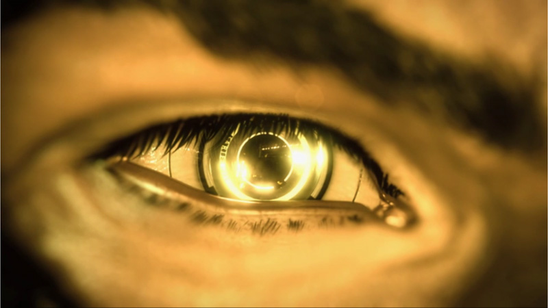
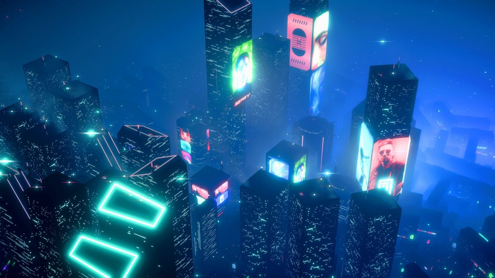

The Cyberpunk Philosophy
Beyond Technology and Society
Cyberpunk is more than just a genre; it’s a philosophy that explores the intersection of technology, society, and individual identity in a rapidly evolving world. Rooted in dystopian visions of the future, it challenges traditional notions of power, freedom, and human connection. Cyberpunk presents a world where technology, often in the form of artificial intelligence, cybernetic enhancements, and hyper-connected systems, defines every aspect of life. Yet, it's also a philosophy that resists the dominant narratives, pushing us to rethink how we interact with the tools that shape our existence.
A Dystopian World
At the core of cyberpunk is its portrayal of a dystopian world, where capitalism has reached its peak and governmental powers are either weak or corrupt. It reflects a reality where wealth and power are concentrated in the hands of multinational corporations, and the state has lost its grip on ensuring justice and equity. In this world, people struggle to maintain their humanity, either by augmenting their bodies with technology (see a fictional and real world example below) or by surviving in harsh urban landscapes where social divides are stark and the underworld thrives.
However, cyberpunk is not just a bleak depiction of the future; it serves as a critique of current social, political, and economic trends. It invites us to question the role of technology in shaping our lives and the consequences of unchecked corporate greed and government negligence.
The Cyberpunk
One of the most striking elements of cyberpunk as a philosophy is its emphasis on individual autonomy in a world where institutions and systems often seem more powerful. The protagonists in cyberpunk works are frequently anti-heroes: hackers, mercenaries, rebels, and outsiders who fight to assert their freedom in a society that demands conformity.
In cyberpunk, the individual is both a product of society and a defiant force within it. Characters often navigate oppressive environments, seeking liberation through technology, rebellion, or sheer willpower. The question of what it means to be human is central to this philosophical journey. Are we still human if we replace our limbs with robotic prosthetics? Does the human soul remain intact when our memories are stored in digital form? Cyberpunk explores these questions, blurring the lines between man and machine, identity and data.
The Role of Technology
Cyberpunk doesn’t merely focus on technology as a tool, but as a pervasive force that reshapes human existence. The philosophy encourages us to consider how deeply intertwined technology is with our daily lives. It challenges the idea that technology is neutral or purely beneficial, instead highlighting its potential for exploitation, alienation, and control.
At the same time, cyberpunk also celebrates the potential for technology to empower individuals. It presents technology not just as a means of surveillance or oppression, but also as a tool for resistance and rebellion. Hacking becomes a form of protest, digital spaces offer sanctuary, and cybernetic augmentations allow individuals to transcend their biological limitations. In this sense, cyberpunk is a philosophy of adaptation, where technology becomes both a means of survival and a method of reclaiming power.
Corpos and Control
A recurring theme in cyberpunk philosophy is the omnipotence of corporations. These mega-corporations hold more power than governments, controlling everything from healthcare and energy to information and law enforcement. They manipulate and surveil, commodifying both the physical and digital worlds to their advantage.
In this framework, cyberpunk asks us to consider the role of corporate power in our own lives. How much control do we really have over the technology we use? To what extent have we sold our privacy and freedom in exchange for convenience and consumerism? Cyberpunk serves as a warning about the consequences of unchecked corporate influence on society, while also illustrating how these power structures can be challenged.
Rebellion and Resistance
At its heart, cyberpunk is about resistance. It’s a philosophy rooted in the rejection of centralized power and the desire to carve out space for autonomy and self-determination. In cyberpunk worlds, resistance takes many forms: from underground movements and rogue hackers to individuals who refuse to conform to the system’s demands.
Cyberpunk inspires a mindset that challenges the status quo, urging individuals to rethink their role in the larger societal machinery. Whether through cybernetic enhancements, information warfare, or simply refusing to live within a predefined system, the cyberpunk ethos encourages rebellion against forces that seek to control and define our lives. It’s a call to reclaim individuality and create a future on our own terms.
Cyberpunk’s Ethical Dilemmas
"Everybody Lies"
Cyberpunk as a philosophy raises numerous ethical questions about the future of humanity. The use of technology to enhance the human body, the role of AI in shaping society, and the dangers of surveillance and data manipulation all pose significant moral challenges.
In the world of cyberpunk, traditional distinctions between good and evil are often blurred. Protagonists are frequently forced to make difficult choices, weighing the costs of their actions against the benefits of their rebellion. The philosophical tension between progress and its consequences becomes a central theme, forcing us to consider how we can navigate a future where technology evolves faster than our ethical frameworks.
Conclusion
"It's not the end of the world, but you can see it from here."
Cyberpunk is a philosophy of rebellion, individualism, and technological critique. It invites us to question the systems that govern our world, offering both a warning and a call to action. As we face increasingly complex technological and societal challenges, cyberpunk challenges us to redefine what it means to be human and to reclaim our autonomy in an increasingly interconnected world.
In the end, cyberpunk is more than just a reflection of dystopian futures — it’s a lens through which we can examine our present and shape our collective future. Through its rebellious spirit, it urges us to look beyond the surface of technology and see its deeper implications, both for ourselves and for the society we inhabit.